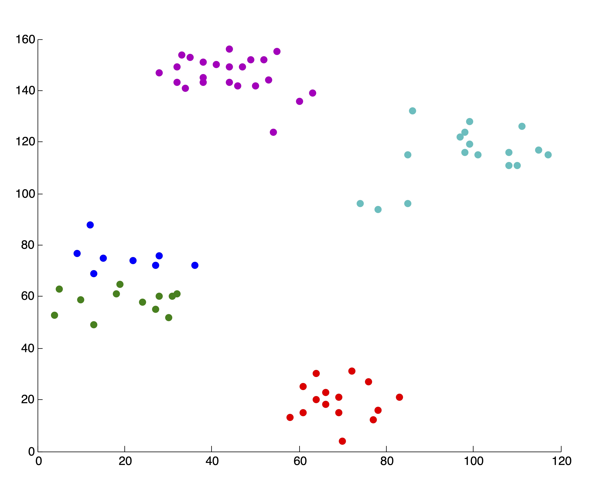
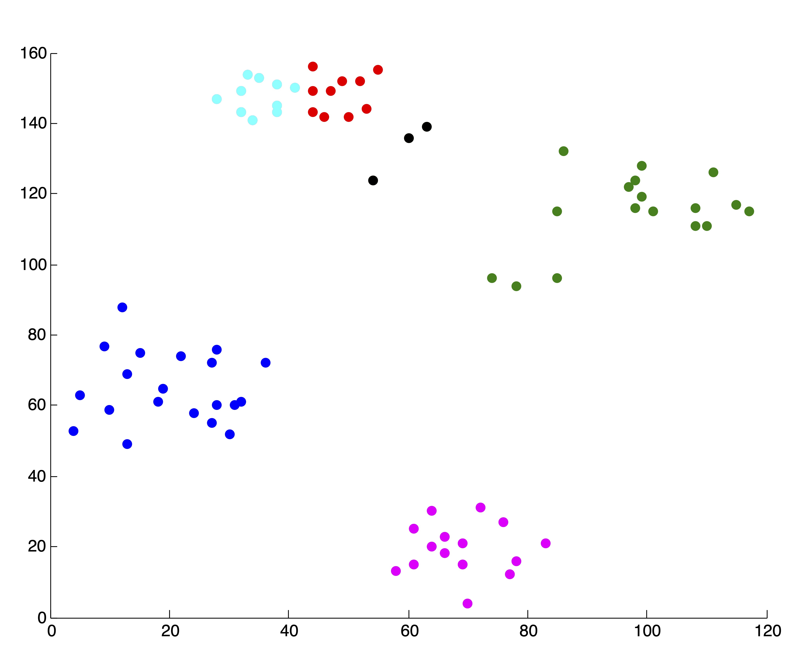
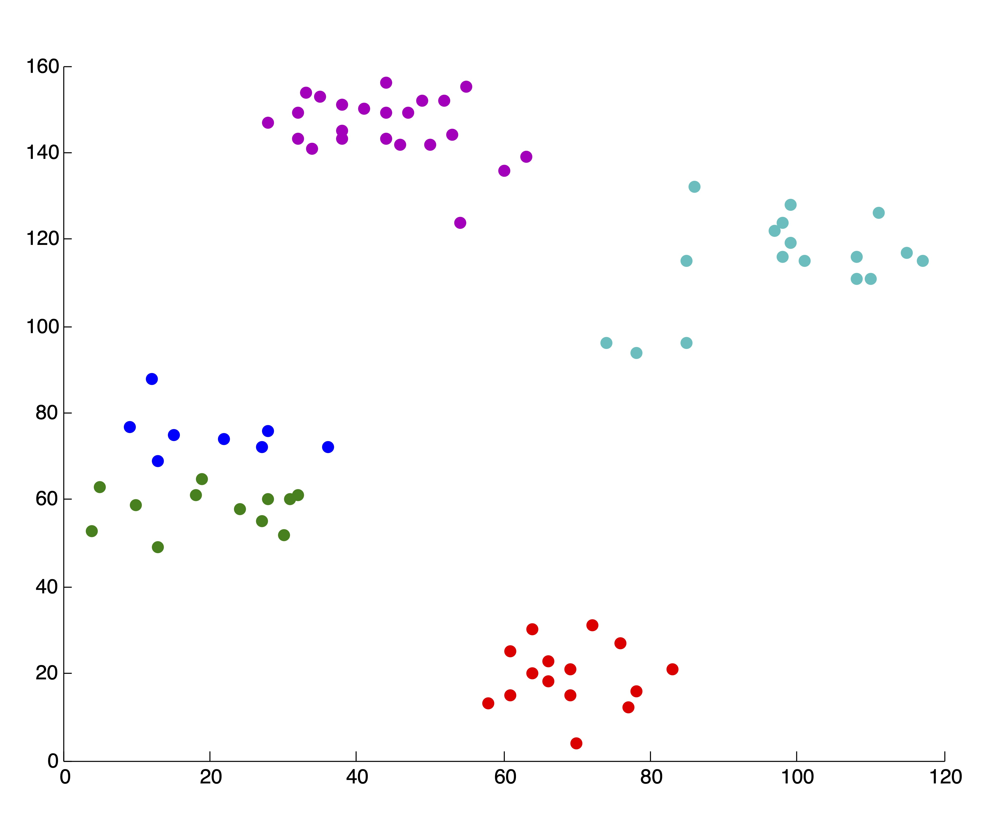
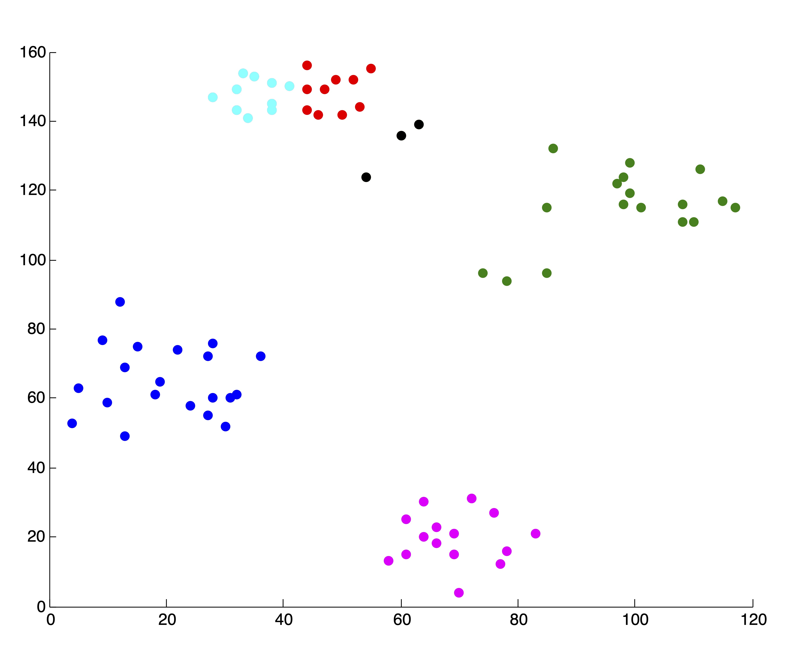
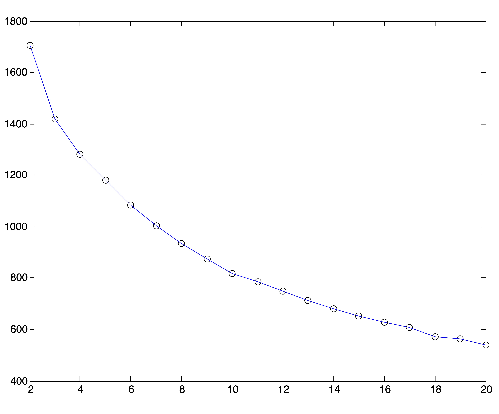
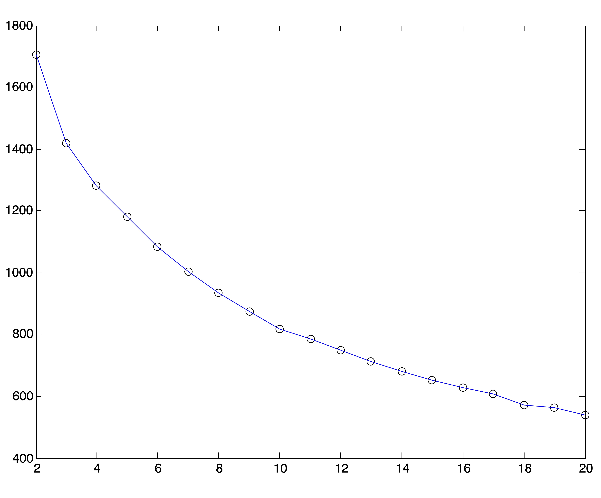
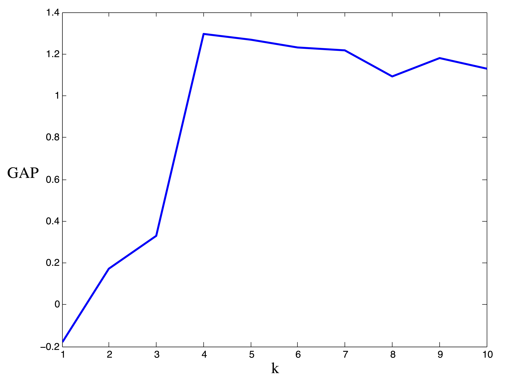
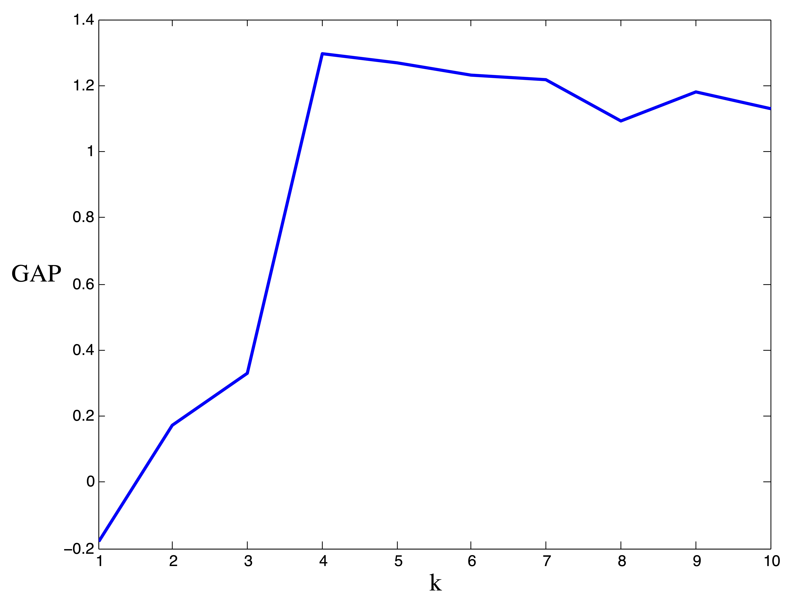

Chapter 24 Determining the Number of Clusters \(k\)
As previously discussed, one of the major dilemmas faced when using the clustering algorithms from Chapters ?? and 22.1 is that these algorithms take the number of clusters, \(k\), as input. Therefore, it is necessary to somehow determine a reasonable estimate for the number of clusters present. Many methods have been proposed for this task, for a more in-depth summary we suggest the 1999 book by Gordon [5] or the 1985 paper by Milligan and Cooper [14]. The purpose of this chapter is to survey some established methodologies for this task, and to motivate our novel method discussed in Chapter ??.
24.1 Methods based on Cluster Validity (Stopping Rules)
The most popular methods for determining the number of clusters involve observing some internal measure of cluster validity (like those outlined in the previous chapter) as the number, \(k\), of clusters increases. Cohesion scores like SSE are expected to be monotonically decreasing as \(k\) increases. At some value, \(k^*\), the marginal drop in SSE is expected to flatten drastically, indicating that further division of the clusters does not provide a significant improvement in terms of cohesion [42]. Methods based on cluster validity can be implemented with any clustering algorithm the user desires. Unfortunately, if the algorithm used is not working well with the dataset then the resulting determination of the number of clusters will be flawed. Furthermore, it is possible to get different results with different algorithms or different cohesion metrics, which may instil the user with little confidence in a given solution.
In the hierarchical algorithms from Section 21.1, a series of solutions ranging from \(k=1\) to \(k=n\) clusters are output, and thus the methods for determining an appropriate value for \(k\) in these procedures are often referred to as stopping rules. Since hierarchical algorithms tend to be slow and computationally expensive for large datasets, the stopping rules which cannot be extended to include general partitions of the data will be omitted from the discussion.
24.2 Sum Squared Error (SSE) Cohesion Plots
For a simple example for this stopping rule methodology, consider the so-called Ruspini dataset in Figure 24.1, which has been used to demonstrate clustering algorithms in the literature. This dataset consists of 75 two dimensional points in the first Cartesian quadrant, and visually it seems clear that these points fall into \(k=4\) different clusters, using Euclidean distance as a measure of proximity. (Some individuals may argue that these 4 clusters could be meaningfully broken down into smaller clusters. These arguments are certainly valid, but we base our decision to specify 4 on the following assumptions: a) If asked to choose 4 clusters, most human beings would choose the same 4 - this may not be the case with 5 or 6; b) If we consider these points as a sample from a population, then it is reasonable to suspect that the collection of more data may destroy the subcluster appearance - that is, there is more observed evidence of 4 clusters than any other number.) We ought to be able to uncover this “true” number of clusters by observing the level of decrease in the SSE metric as the number of clusters increase, and determining an “elbow” in the curve at \(k^*=4\) where the SSE flattens out for \(k\geq 4\).

Figure 24.1: The Two-Dimensional Ruspini Dataset
Figure 24.2 shows some examples of clusters found in the data using \(k\)-means and \(k=2, 3, 4, 5, 6\) clusters. The initialization of seed points was done randomly in each case. Figure 24.2 shows the SSE (as described in Section ?? for the 6 different clusterings. We wish to point out that these 5 clusterings are “good” or reasonable clusterings upon visual inspection. Indeed, this first SSE plot properly depicts \(k^*=4\) as the “elbow” of the curve, where the marginal decrease in SSE for adding additional clusters flattens out.
 

Figure 24.2: 5 “Good” \(k\)-means Clusterings of the Ruspini Dataset and the Corresponding SSE Plot
User Beware
As always, with \(k\)-means, it is of the utmost importance that the user pay close attention to the output from the algorithm. In our creation of the SSE plot in Figure 24.2, we came by the two solutions, associated with \(k=4\) and \(k=5\) clusters respectively, that are shown in Figure 24.3. Because we are able to visualize the data in 2 dimensions (which, practically speaking, means we could have identified \(k^*=4\) by visualizing the original data anyhow), we were able to throw away these two solutions upon inspection. If we did not do this, the resulting SSE plot shown in Figure 24.3 would have clearly misled us to choose \(k^*=3\) clusters. Without being able to visually inspect the solutions, it is wise to run several iterations of the \(k\)-means algorithm for each \(k\) and use some criteria (like lowest SSE, or most frequent SSE [69]) to choose an appropriate clustering for inclusion in the SSE plot. While this is not guaranteed to circumvent problematic SSE plots like that shown in Figure 24.3, it can help in many situations and certainly won’t hurt in others. This dependence on good clusterings is a glaring drawback of stopping rule methodology, because not all algorithms can produce multiple results for a single value of \(k\) to choose from.

Figure 24.3: Example of ‘Poor’ Clusterings and their Effect on SSE Plot
24.2.1 Cosine-Cohesion Plots for Text Data
Further complicating the method of cohesion plots is the curse of dimensionality discussed in Chapter ??. For high dimensional data, it is unusual to witness such drastic “elbows” in these plots. To illustrate this effect, we consider a combination of 3 text datasets used frequently in the information retrieval literature: ‘Medlars,’ ‘Cranfield,’ ‘CISI’ [68]. The Medlars-Cranfield-CISI (MCC) collection consists of nearly 4,000 scientific abstracts from 3 different disciplines. These 3 disciplines (Medlars = medicine, Cranfield = aerodynamics, CISI = information science) form 3 relatively distinct clusters in the data, which are not particularly difficult to uncover (For example, spherical \(k\)-means frequently achieves 98% accuracy on the full-dimensional data).
For this experiment, we ran 25 trials of the spherical \(k\)-means algorithm for each value of \(k=2,3,\dots,20\) and from each set of trials chose the solution with the lowest objective value. The resulting SSE plot is shown in Figure 24.4. It is difficult to identify a distinct “elbow” in this curve.

Figure 24.4: Spherical \(k\)-means Objective Function Values for \(2\leq k \leq 20\)
Because of the behavior of distance metrics in high dimensional space, it is often easier (and always faster) to find clusters after reducing the dimensions of a dataset by one of the methods discussed in Chapter ??. Because the singular value decomposition generally works well for text data, we conduct this same experiment on the Medlars-Cranfield-CISI dataset using projections onto the first \(r=8,12, \mbox{ and } 20\) singular vectors. Using the correct number of clusters \(k^*=3\), the \(k\)-means algorithm is able to achieve the same accuracy of 98% on each of these dimension reductions, indicating that the clustering information is by no means lost in the lower dimensional representations. However, the SSE plots for these lower dimensional representations, shown in Figure 24.5, do no better at clearly indicating an appropriate number of clusters. In fact, these graphs seem to flatten out at \(k=r\). Again, 25 trials of the \(k\)-means algorithm were run for each value of \(k\) and the solution with the lowest SSE was chosen to represent that value of \(k\) in the plots.
 

Figure 24.5: SSE Plots for Medlars-Cranfield-CISI Clusterings using SVD Reduction to \(r=\{8,12,20\}\) dimensions
24.2.2 Ray and Turi’s Method
In [15], Ray and Turi suggested the use of their validity metric for determining the number of clusters. Unlike the SSE plots investigated previously, this method does not rely on the subjectivity of the user. Instead, the goal is simply to find the minimum value of their validity metric over the clusterings produced for various values of \(k\). Recalling the definition from Chapter 23 Section 23.1.1.2, we have the validity of a clustering defined as \[\begin{equation} v=\frac{M_{intra}}{M_{inter}} (\#rayturivalidity) \end{equation}\] where \[\begin{eqnarray} M_{intra} &=& \frac{1}{n} \sum_{i=1}^{k} \sum_{\x in C_i} \| \x - \mean_i\|_2^2 \\ M_{inter} &=& \min_{1\leq i <j \leq k} \|\mean_i - \mean_j\|^2 \end{eqnarray}\] and \(\mean_i\) is the centroid of cluster \(i\). In their original work in [15], the authors’ goal was to cluster images. They noticed for these datasets that the minimum value for the validity metric frequently occurred for small numbers of clusters in the range of 2, 3, or 4 because of the large inter-cluster distances occurring when the number of clusters is small. This was undesirable in their application to image processing because the number of clusters was not expected to be small. To account for this fact, they proposed the following procedural adjustment for determining the number of clusters:
- Specify the maximum number of clusters to be considered, \(k_{max}\).
- For \(k=2,\dots,k_{max}\) use \(k\)-means to cluster the data into \(k\) clusters.
- For each clustering \(C(k)\) compute the validity metric, \(v(k)\) from Equation (??).
- Locate the first local maximum in the validity measure, \(\tilde{k}\) such that \[v(\tilde{k}-1) < v(\tilde{k}) > v(\tilde{k}+1)\]
- Choose the optimal number of clusters, \(k^*\), to be the modified minimum such that \(\tilde{k} < k^* \leq k_{max}\) is the number which minimizes the validity measure after the first local maximum.
Ray and Turi Plots for the Ruspini Data
We applied the above method to the 2-dimensional Ruspini data which was depicted in Figure 24.1. To avoid the type of poor clusterings that were displayed in Figure ??, for each value of \(k\), the \(k\)-means algorithm was run 25 times and the best solution (that is, the solution with the lowest objective function) was chosen to represent that value of \(k\). Figure 24.6 shows the plot of Ray and Turi’s validity metric computed on each solution. If one were to pick the global minimum from this set of clusterings, the optimal number of clusters would be \(k^*=2\). However, according to the modified minimum favored in the original paper [15], the optimal number of clusters for the Ruspini data is \(k^*=5\). Neither of these solutions impose quite as obvious a clustering as the true number, 4.
Figure 24.6: Ray and Turi Validity Plot for Ruspini Data
Ray and Turi Plots for Medlars-Cranfield-CISI
We can generate similar plots using the same clusterings found by spherical \(k\)-means that were used to generate the SSE plots in Figures 24.4 and 24.5. Obviously, the plots of Ray and Turi’s validity metric are far more definitive in their determination of \(k^*\), although it is left to the user to determine whether to pick the global minimum or modified minimum [15].


Figure 24.7: Ray & Turi’s Validity Plots for Medlars-Cranfield-CISI Clusterings on Raw Data and SVD Reductions to \(r=\{8,12,20\}\) Dimensions Respectively.
The results from Figures 24.6 and 24.7 are summarized in the following table, which shows the number of clusters that would be chosen if one were to pick the global minimum validity or the modified minimum validity along with the actual number of clusters.
| Data Input | Global Min | Modified Min. | Actual \(k\) |
| Medlars-Cranfield-CISI | 4 | 6 |
3 or 5 |
| Ruspini | 2 | 5 | 4 |
24.2.3 The Gap Statistic
The gap statistic is an index devised by Tibshirani, Walther, and Hastie in 2000 that has received massive amounts of attention in the literature. This method is quite similar to the stopping methods previously discussed, only now the objective is to compare the cluster cohesion values with what is expected under some null reference distribution [8]. Supposing the \(n\) data points \(\x_1,\dots,\x_n\) are clustered in to \(k\) clusters, \(C_1,C_2,\dots,C_k\) and \(|C_j|=n_j\) some measure of cohesion is defined as \[W_k = \sum_{j=1}^k \frac{1}{2n_j} \sum_{\x_p,\x_q \in \C_j} d(\x_p,\x_q)\] where \(d(x,y)\) is a distance function. The idea is then to compare the graph of \(\log(W_k), \,\,k=1,\dots,K\) to its expectation under some null reference distribution and to choose the value of \(k, 1\leq k \leq K\) for which \(\log(W_k)\) falls the farthest below its expectation. This distance between \(\log(W_k)\) and its expectation under the reference distribution, denoted by \(E^*\), is called the gap: \[\mbox{Gap}(k) = E^*(\log(W_k)) - \log(W_k).\]
This expectation is estimated by drawing a Monte Carlo sample, \(\X^*_1,\X^*_2,\dots,\X^*_B\) from the reference distribution. Each dataset in the sample is clustered, and the values of \(\log(W^*_k), \,\,k=1,\dots,K\) are averaged over the samples. The sampling distribution of the gap statistic is controlled using the standard deviation, \(sd_k\), of the B Monte Carlo replicates of \(\log(W^*_k)\). Accounting for the simulation error in \(E^*(\log(W_k))\) yields the standard error \[s_k = sd_k\sqrt{1+\frac{1}{B}} .\]
Using the common “one standard error” rule, the number of clusters \(k^*\) is chosen to be the smallest \(k\) such that \[Gap(k)\geq Gap(k+1)-s_{k+1}.\]
The authors in [8] suggest, both for simplicity and performance, using a uniform distribution as the null reference distribution. This process is summarized in Table 24.2.
|
In Figure 24.8 we provide the results from the gap statistic procedure on the ruspini data. Our Monte Carlo simulation involved \(B=10\) generated datasets. The gap statistic indicates the presence of \(k^*=4\) clusters.
 

Figure 24.8: Results for gap statistic procedure on Ruspini data. Observed vs. Expected values of \(\log(W_k)\) (left) and Width of Gap (right). The maximum gap occurs at \(k^*=4\) clusters.
24.3 Graph Methods Based on Eigenvalues
(Perron Cluster Analysis)
Another commonly used methodology for determining the number of clusters relies upon the examination of eigenvalues of a graph Laplacian. Keeping with our focus in Chapter 22.1 we consider only undirected graphs. The methodology contained herein is motivated by the following observation: suppose we had an undirected graph consisting of \(k\) connected components (i.e. \(k\) distinct components, none of which are connected to any other). The adjacency matrix of such a graph would be block diagonal with \(k\) diagonal blocks \(\A_1, \dots, \A_k\), and each diagonal block would itself be an adjacency matrix for one connected component.
\[\begin{equation} \A = \left[ \begin{array}{ccccc} \A_1 & 0 & 0& \dots & 0 \\ 0 & \A_2 & 0 & \dots & 0 \\ 0 & 0 & \A_3 & \ddots & 0 \\ 0 & 0& 0 & \ddots & \vdots \\ 0 & 0 & 0 & \dots & \A_k \end{array} \right] \tag{24.1} \end{equation}\]
Thus, the Laplacian matrix \(\mathbf{L}=\mathbf{D}-\A\) would also be block diagonal and each diagonal block would be the Laplacian matrix for one component of the graph.
\[\begin{equation} \mathbf{L} = \left[ \begin{array}{ccccc} \mathbf{L}_1 & 0 & 0& \dots & 0 \\ 0 & \mathbf{L}_2 & 0 & \dots & 0 \\ 0 & 0 & \mathbf{L}_3 & \ddots & 0 \\ 0 & 0& 0 & \ddots & \vdots \\ 0 & 0 & 0 & \dots & \mathbf{L}_k \end{array} \right] \hspace{.5cm} \mbox{ with } \mathbf{L}_i \e = \mathbf{0} \mbox{ for } i=1,\dots, k \tag{24.2} \end{equation}\]
Thus, if each component is connected, the multiplicity of the smallest eigenvalue, \(\lambda_1 = 0\), will count the number of diagonal blocks and thus the number of components. Of course the situation depicted in Equation (24.2) is ideal and unlikely to be encountered in practice. However when the graph is nearly decomposable into disconnected components, continuity of the eigenvalues suggests that one may be able to count the number of tightly connected components by counting the number of eigenvalues near \(\lambda_1 =0\). In order to be able to characterize eigenvalues as being near \(\lambda_1 =0\), it is necessary to transform (normalize) the Laplacian matrix so that its spectrum is contained in the interval \([0,1]\). This type of analysis is usually done using one of the two normalized Laplacian matrices discussed in Chapter 22.1 and defined again here.- The random-walk Laplacian \[\mathbf{L}_{rw} = \mathbf{D}^{-1}\mathbf{L} = \mathbf{I}-\mathbf{D}^{-1}\mathbf{A} = \mathbf{I}-\mathbf{P}\]
- The symmetric Laplacian \[\mathbf{L}_{sym} = \mathbf{D}^{-1/2}\mathbf{L}\mathbf{D}^{-1/2}=\mathbf{I}-\mathbf{D}^{-1/2}\mathbf{A}\mathbf{D}^{-1/2}.\]
The normalized Laplacians, like the Laplacian matrix itself, are both positive definite. Furthermore, \(\mathbf{L}_{rw}\) and \(\mathbf{L}_{sym}\) have the same spectrum. The following well-known and easily verified fact characterizes the relationship between the eigenvalues and eigenvectors of these two matrices [59].
Theorem 24.1 (Eigenvalues of \(\mathbf{L}_{sym}\) and \(\mathbf{L}_{rw}\)) \(\lambda\) is an eigenvalue of \(\mathbf{L}_{rw}\) with eigenvector \(\mathbf{v}\) if and only if \(\lambda\) is an eigenvalue of \(\mathbf{L}_{sym}\) with eigenvector \(\mathbf{w}=\mathbf{D}^{1/2}\mathbf{v}\).
In light of this fact, we will limit our discussion to the properties of the transition probability matrix of a random walk on the graph associated with the adjacency matrix \(\A\), denoted
\[\mathbf{P}=\mathbf{D}^{-1} \A = \mathbf{I}-\mathbf{L}_{rw},\]
since \[\lambda \in \sigma(\mathbf{P}) \quad \Rightarrow \quad (1-\lambda) \in \sigma(\mathbf{L}_{rw}).\]
Random walks on undirected graphs are reversible Markov chains, which satisfy the so-called detailed balance equations [67], [71]:
\[\mathbf{Q}\mathbf{P}=\mathbf{P}^T \mathbf{Q} \hspace{.2cm} \mbox{ where } \mathbf{Q}=diag(\mathbf{\pi}).\]
The stationary distribution for \(\mathbf{P}\) given by \(\mathbf{\pi}^T= \frac{\e^T\mathbf{D}}{\e^T\mathbf{D}\e}\).
We assume the underlying graph (which we aim to partition) is connected so that the matrix \(\mathbf{P}\) is irreducible. If the graph is composed of connected components, like the one associated with Equation (24.1), the resulting random walk is equivalently referred to as completely reducible, uncoupled, or completely decomposable and there simple efficient algorithms available to identify the connected components [3].
In our connected graph, we assume that there exists some cluster or community structure, i.e. that there are \(k\) groups of vertices, \(C_1,C_2, \dots, C_k\) with \(|C_k|=n_k\), for which edges exist more frequently and with higher weight within each group than between each group. With this assumption, we can reorder the rows and columns of the transition probability matrix \(\mathbf{P}\) according to group membership so that the result is block-diagonally dominant. By this we essentially mean that \(\mathbf{P}\) is a perturbation of a block-diagonal matrix \(\mathbf{B}\), such that
\[\begin{equation} \mathbf{P}=\mathbf{B}+\mathbf{E} = \left[ \begin{array}{ccccc} \mathbf{B}_{11} & \mathbf{E}_{12} & \mathbf{E}_{13}& \dots & \mathbf{E}_{1k} \\ \mathbf{E}_{21} & \mathbf{B}_{22} & \mathbf{E}_{23} & \dots & \mathbf{E}_{2k} \\ \mathbf{E}_{31} & \mathbf{E}_{32} & \mathbf{B}_{33} & \ddots & \mathbf{E}_{3k} \\ \vdots& \vdots& \vdots & \ddots & \vdots \\ \mathbf{E}_{k1} & \mathbf{E}_{k2}& \mathbf{E}_{k3} & \dots & \mathbf{B}_{kk} \end{array} \right] \tag{24.3} \end{equation}\] where the off-diagonal blocks, \(\mathbf{E}_{ij}\), are much smaller in magnitude than the the diagonal blocks. In fact, the entries in the off-diagonal blocks are small enough that the diagonal blocks are nearly stochastic, i.e. \(\mathbf{B}_{ii} \e \approx 1\) for \(i=1,2,\dots,k\). A transition probability matrix taking this form describes a nearly uncoupled or nearly completely reducible Markov Chain.
The degree to which a matrix is considered nearly uncoupled is dependent on one’s criteria for measuring the level of coupling (interconnection) between the aggregates (clusters of states) of the Markov chain [12], [64], [66]. In [12], the deviation from complete reducibility is defined as follows:
Definition 24.1 (Deviation from Complete Reducibility) For an \(m\times n\) irreducible stochastic matrix with a \(k\)-level partition \[\mathbf{P} = \left[ \begin{array}{ccccc} \mathbf{P}_{11} & \mathbf{P}_{12} & \mathbf{P}_{13}& \dots & \mathbf{P}_{1k} \\ \mathbf{P}_{21} & \mathbf{P}_{22} & \mathbf{P}_{23} & \dots & \mathbf{P}_{2k} \\ \mathbf{P}_{31} & \mathbf{P}_{32} & \mathbf{P}_{33} & \ddots & \mathbf{P}_{3k} \\ \vdots& \vdots& \vdots & \ddots & \vdots \\ \mathbf{P}_{k1} & \mathbf{P}_{k2}& \mathbf{P}_{k3} & \dots & \mathbf{P}_{kk} \end{array} \right]\] the number \[\delta=2\max_{i} \|\mathbf{P}_{i*}\|_{\infty}\] is called the deviation from complete reducibility.
It is important to point out that the parameter \(\delta\), or any other parameter that measures the level of coupling between clusters in a graph (like those suggested in [2], [64], [66]) cannot be computed without knowing a priori the clusters in the graph. Such parameters are merely tools for the perturbation analysis, used to prove the next theorem regarding the spectrum of block-diagonally dominant stochastic matrices [2], [6], [11]–[13], [63], [66].
Theorem 24.2 (The Spectrum of a Block-Diagonally Dominant Stochastic Matrix) For sufficiently small \(\delta \neq 0\), the eigenvalues of \(\mathbf{P}(\delta)\) are continuous in \(\delta\), and can be divided into 3 parts [11], [12], [63], [66]:
- The Perron root, \(\lambda_1(\delta)=1\),
- a cluster of \(k-1\) eigenvalues \(\lambda_2(\delta),\lambda_3(\delta),\dots,\lambda_k(\delta)\) that approach 1 as \(\delta \to 0\), and
- the remaining eigenvalues, which are bounded away from 1 as \(\delta \to 0\).
The cluster of \(k\) eigenvalues surrounding and including the Perron root \(\lambda_1=1\) is known as the Perron cluster [11]. The analysis in [63] explains that if there is no further decomposition (or meaningful sub-clustering) of the diagonal blocks, a relatively large gap between the eigenvalues \(\lambda_k\) and \(\lambda_{k+1}\) is expected. Thus, we can determine the number of clusters in the state space of a nearly uncoupled Markov chain (i.e. the number of clusters in a graph) by counting the number of eigenvalues in this Perron Cluster.
This method is extremely effective when the graph to be partitioned is sufficiently close to being uncoupled. Problems arise when either high levels of coupling (intercluster linkage) are in play or when some vertices within a cluster are weakly connected to that cluster (for example, dangling nodes - vertices with degree 1).
The examples in Figure 24.9 illustrate this point. Firts we show a synthetic example of a graph exhibiting cluster structure and the eigenvalues of the associated transition probability matrix respectively. The thickness of the edges in the graph correspond to their respective weights. Because there is a limited amount of coupling (intercluster connection) in this first example, the Perron cluster of eigenvalues is easy to identify. Because there are 3 eigenvalues near 1, the user would conclude that the graph has 3 clusters.
Occasionally a user can get a sense of the cluster structure in a graph with an appropriate layout of the nodes and edges. Force-directed graph drawing algorithms are common in this practice. The basic idea behind these algorithms is to model the edges as springs connecting the nodes and then to somehow minimize the total amount of tension in the system. Thus, densely connected groups of nodes are placed proximal to each other and the edges which loosely connect these groups are stretched. The graph drawings in Figure 24.9 are all examples of force-directed layouts. Graph drawing algorithms are beyond the scope of this paper, but for information the interested reader should see, for example, [9].
The second two rows of Figure 24.9 display a real-world example using the hyperlink graph between a sample of 1222 American political blogs. Based upon the force-directed drawing of the graph, it is clear that there are 2 large communities or clusters in this graph. These clusters correspond to the liberal and conservative division of American politics. The Perron cluster is not easily identified on the eigenvalue plot in Figure 24.9, and thus no conclusion should be drawn regarding the number of clusters in this data. However, after removing a large number of dangling nodes from the graph, or blogs which link only to a single neighboring page in the sampled population, a different picture comes to light. In the final row of Figure 24.9 we illustrate the effect of removing these dangling nodes (about 200 in total) on the eigenvalues of the transition probability matrix. Luckily, for this particular graph, removing the dangling nodes did not create more, a situation that is not guaranteed in general. The third eigenvalue in the Perron cluster likely identifies the small group of 3 blogs that is now visible in the force directed drawing of the graph. Such small clusters are generally undesirable in graph partitioning, and since the eigenvalues tell the user nothing about the size or composition of the graph communities counted by the eigenvalues in the Perron cluster, this method must be used with caution!


Figure 24.9: Some Examples of Perron Cluster Identification on various Network Datasets
In the next Chapter, we will introduce a similarity matrix that is well suited for this Perron-cluster analysis. Our method has the ability of estimating the number of clusters in very noisy and high-dimensional data when other methods fail.